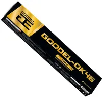

ОК-46
Универсальные электроды типа Э46 с рутилово-целлюлозным покрытием. Стабильная дуга на малых токах, лёгкое зажигание, подходят для тонкостенных изделий.
Два типа электродов: универсальные для тонкого металла и низководородные для ответственных швов
Листайте для просмотра всех особенностей

Универсальные электроды типа Э46 с рутилово-целлюлозным покрытием. Стабильная дуга на малых токах, лёгкое зажигание, подходят для тонкостенных изделий.

Электроды типа Э50А с основным покрытием и низким содержанием водорода в шве. Для ответственных конструкций и сварки при пониженных температурах.

ОК-46: переменный и постоянный ток любой полярности, Uхх от 50 В. ОК-48: постоянный ток обратной полярности, для переменного тока нужен Uхх около 70 В.

ОК-46 нечувствительны к лёгкой ржавчине. ОК-48 требуют чистых кромок и обязательной прокалки при 300–350 °C перед работой.
Универсальные электроды типа Э46 с рутилово-целлюлозным покрытием. Дуга зажигается и возобновляется легко, горит стабильно даже на малых токах, а шлак отделяется практически сам.
Подходят для сварки тонкостенных изделий и во всех пространственных положениях, включая вертикальный шов сверху вниз. Нечувствительны к лёгкой ржавчине и поверхностным загрязнениям.
Электроды типа Э50А с основным покрытием и низким содержанием водорода в наплавленном металле. Шов отличается высокой пластичностью и ударной вязкостью, а риск образования холодных трещин минимален.
Применяются для ответственных конструкций, толстостенных деталей и работы при пониженных температурах. Требуют чистых кромок, аккуратной техники сварки и обязательной прокалки.
ОК-46 рутилово-целлюлозные: для особо ответственных швов и работы в мороз лучше брать ОК-48. ОК-48 требуют более высокой квалификации, чистого металла и прокалки; на переменном токе нужен источник с напряжением холостого хода около 70 В.
Оба типа не подходят для нержавеющих сталей, чугуна и цветных металлов.